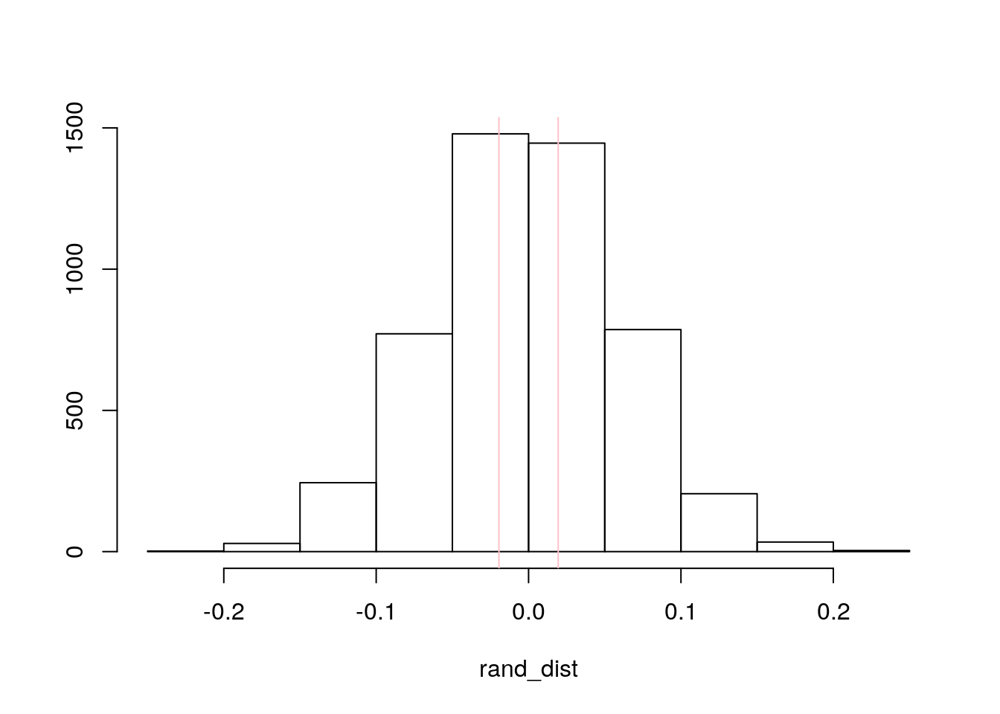
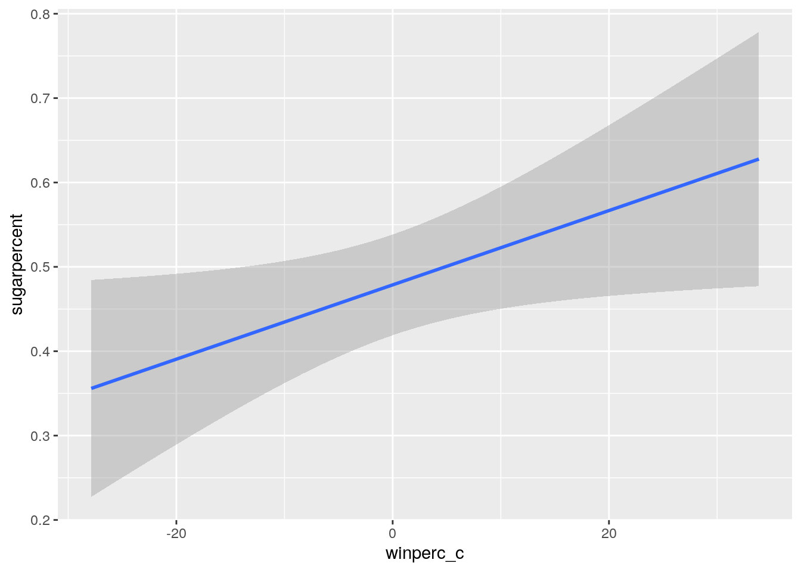
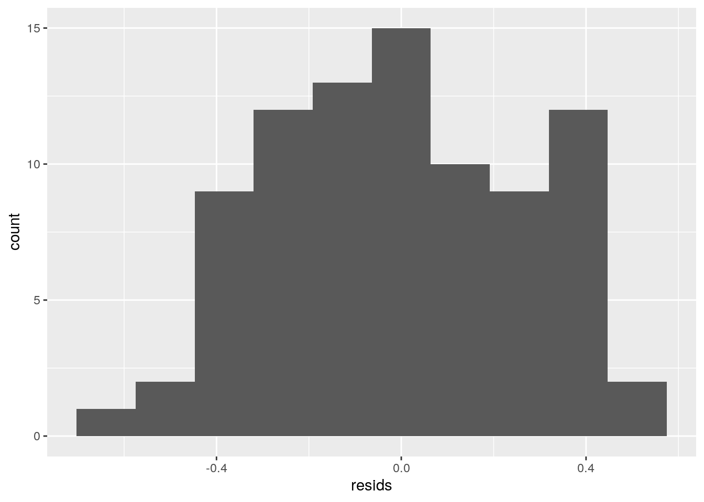
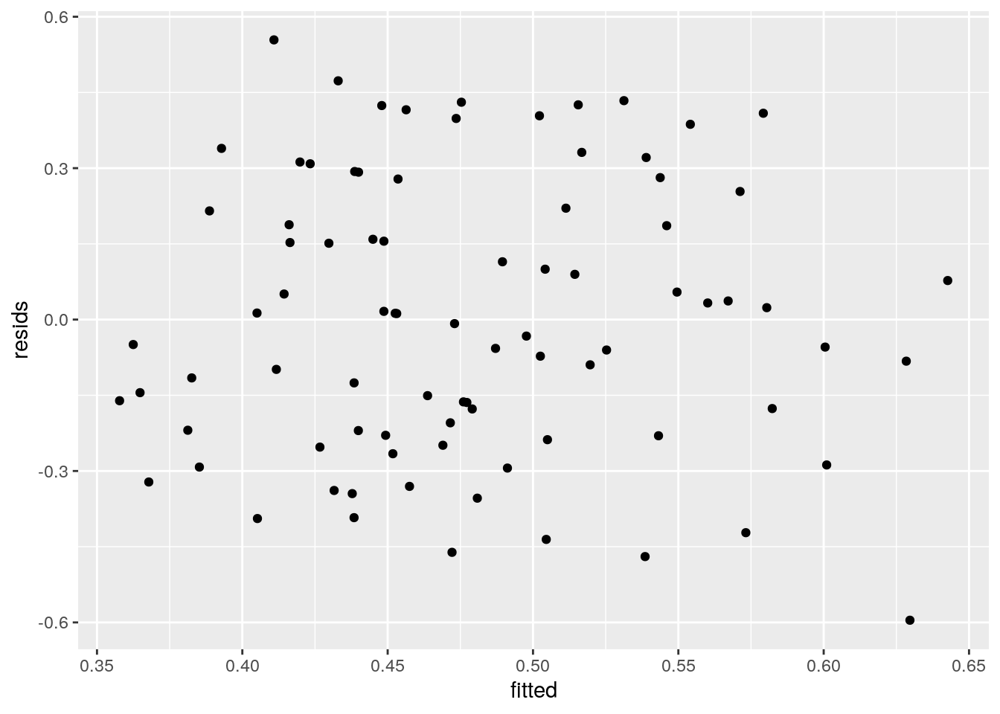
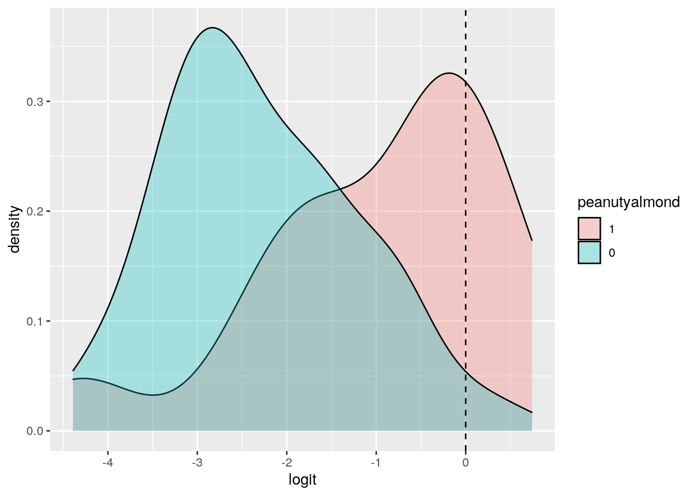
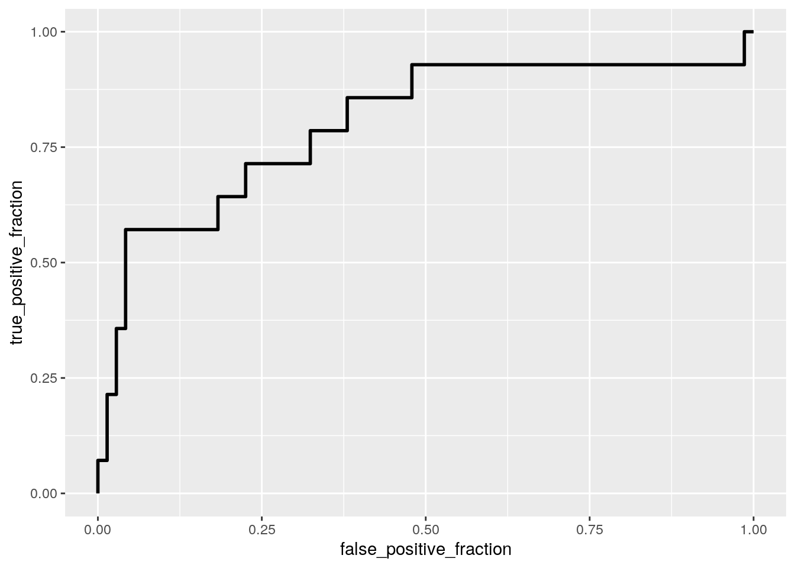

library(fivethirtyeight)## Some larger datasets need to be installed separately, like senators and
## house_district_forecast. To install these, we recommend you install the
## fivethirtyeightdata package by running:
## install.packages('fivethirtyeightdata', repos =
## 'https://fivethirtyeightdata.github.io/drat/', type = 'source')library(ggplot2)
library(dplyr)##
## Attaching package: 'dplyr'## The following objects are masked from 'package:stats':
##
## filter, lag## The following objects are masked from 'package:base':
##
## intersect, setdiff, setequal, uniondata(candy_rankings)
class_diag<-function(probs,truth){
if(is.numeric(truth)==FALSE & is.logical(truth)==FALSE) truth<-as.numeric(truth)-1
tab<-table(factor(probs>.5,levels=c("FALSE","TRUE")),truth)
prediction<-ifelse(probs>.5,1,0)
acc=mean(truth==prediction)
sens=mean(prediction[truth==1]==1)
spec=mean(prediction[truth==0]==0)
ppv=mean(truth[prediction==1]==1)
f1=2*(sens*ppv)/(sens+ppv)
#CALCULATE EXACT AUC
ord<-order(probs, decreasing=TRUE)
probs <- probs[ord]; truth <- truth[ord]
TPR=cumsum(truth)/max(1,sum(truth))
FPR=cumsum(!truth)/max(1,sum(!truth))
dup<-c(probs[-1]>=probs[-length(probs)], FALSE)
TPR<-c(0,TPR[!dup],1); FPR<-c(0,FPR[!dup],1)
n <- length(TPR)
auc<- sum( ((TPR[-1]+TPR[-n])/2) * (FPR[-1]-FPR[-n]) )
data.frame(acc,sens,spec,ppv,auc)
}man1 <-manova(cbind(sugarpercent, pricepercent)~chocolate, data=candy_rankings)
summary(man1)## Df Pillai approx F num Df den Df Pr(>F)
## chocolate 1 0.25904 14.334 2 82 4.587e-06 ***
## Residuals 83
## ---
## Signif. codes: 0 '***' 0.001 '**' 0.01 '*' 0.05 '.' 0.1 ' ' 1summary.aov(man1)## Response sugarpercent :
## Df Sum Sq Mean Sq F value Pr(>F)
## chocolate 1 0.0729 0.072887 0.9105 0.3427
## Residuals 83 6.6440 0.080049
##
## Response pricepercent :
## Df Sum Sq Mean Sq F value Pr(>F)
## chocolate 1 1.7468 1.74680 28.364 8.434e-07 ***
## Residuals 83 5.1116 0.06158
## ---
## Signif. codes: 0 '***' 0.001 '**' 0.01 '*' 0.05 '.' 0.1 ' ' 1pairwise.t.test(candy_rankings$sugarpercent, candy_rankings$chocolate, p.adj="none")##
## Pairwise comparisons using t tests with pooled SD
##
## data: candy_rankings$sugarpercent and candy_rankings$chocolate
##
## FALSE
## TRUE 0.34
##
## P value adjustment method: nonepairwise.t.test(candy_rankings$pricepercent, candy_rankings$chocolate, p.adj="none")##
## Pairwise comparisons using t tests with pooled SD
##
## data: candy_rankings$pricepercent and candy_rankings$chocolate
##
## FALSE
## TRUE 8.4e-07
##
## P value adjustment method: none1-.95^5## [1] 0.22621910.05/5## [1] 0.01library(rstatix)##
## Attaching package: 'rstatix'## The following object is masked from 'package:stats':
##
## filtergroup <- candy_rankings$chocolate
DVs <- candy_rankings %>% select(sugarpercent,pricepercent)
#Test multivariate normality for each group (null: assumption met)
sapply(split(DVs,group), mshapiro_test)## FALSE TRUE
## statistic 0.9607262 0.8933903
## p.value 0.1080198 0.001940839#here one of our p-values is less than 0.05 which means that assumptions are violated for MANOVA.
candy_rankings%>%group_by(fruity)%>%summarize(means=mean(sugarpercent))%>%summarize(`mean_diff`=diff(means))## `summarise()` ungrouping output (override with `.groups` argument)## # A tibble: 1 x 1
## mean_diff
## <dbl>
## 1 -0.0194rand_dist<-vector()
for(i in 1:5000){
new<-data.frame(sugarpercent=sample(candy_rankings$sugarpercent),fruity=candy_rankings$fruity)
rand_dist[i]<-mean(new[new$fruity=="TRUE",]$sugarpercent)-
mean(new[new$fruity=="FALSE",]$sugarpercent)}
mean(rand_dist>0.0194457 | rand_dist < -0.0194457)## [1] 0.757{hist(rand_dist,main="",ylab=""); abline(v = c(0.0194457,-0.0194457),col="pink")}
candy_rankings$winperc_c <- candy_rankings$winpercent - mean(candy_rankings$winpercent)
fit<-lm(sugarpercent ~ chocolate*winperc_c, data=candy_rankings)
summary(fit)##
## Call:
## lm(formula = sugarpercent ~ chocolate * winperc_c, data = candy_rankings)
##
## Residuals:
## Min 1Q Median 3Q Max
## -0.59567 -0.21991 -0.00801 0.22068 0.55412
##
## Coefficients:
## Estimate Std. Error t value Pr(>|t|)
## (Intercept) 0.4924329 0.0519340 9.482 8.88e-15 ***
## chocolateTRUE -0.0400108 0.0793981 -0.504 0.616
## winperc_c 0.0048315 0.0039936 1.210 0.230
## chocolateTRUE:winperc_c 0.0007865 0.0054039 0.146 0.885
## ---
## Signif. codes: 0 '***' 0.001 '**' 0.01 '*' 0.05 '.' 0.1 ' ' 1
##
## Residual standard error: 0.2798 on 81 degrees of freedom
## Multiple R-squared: 0.05568, Adjusted R-squared: 0.0207
## F-statistic: 1.592 on 3 and 81 DF, p-value: 0.1977ggplot(candy_rankings, aes(winperc_c, sugarpercent))+geom_smooth(method="lm")## `geom_smooth()` using formula 'y ~ x'
#Normality
resids<-lm(sugarpercent ~ chocolate*winperc_c, data=candy_rankings)$residuals
ggplot()+geom_histogram(aes(resids),bins=10)
#it looks pretty normal
#Homoskedasticity
fitted<-lm(sugarpercent ~ chocolate*winperc_c, data=candy_rankings)$fitted.values
ggplot()+geom_point(aes(fitted,resids))
#and it looks homoskedastic because there is no fanning out and linear because nothing crazy going on.
#it seems like all of our assumptions are met!!
#original SEs
summary(fit)$coef[,1:2]## Estimate Std. Error
## (Intercept) 0.4924329378 0.051934008
## chocolateTRUE -0.0400107608 0.079398117
## winperc_c 0.0048315384 0.003993575
## chocolateTRUE:winperc_c 0.0007864843 0.005403893#robust SEs
library(lmtest)## Loading required package: zoo##
## Attaching package: 'zoo'## The following objects are masked from 'package:base':
##
## as.Date, as.Date.numericlibrary(sandwich)
coeftest(fit, vcov=vcovHC(fit))[,1:2]## Estimate Std. Error
## (Intercept) 0.4924329378 0.067474298
## chocolateTRUE -0.0400107608 0.080968396
## winperc_c 0.0048315384 0.005014389
## chocolateTRUE:winperc_c 0.0007864843 0.006037377#The standard errors are around the same for the datase before and after correcting.
summary(fit)##
## Call:
## lm(formula = sugarpercent ~ chocolate * winperc_c, data = candy_rankings)
##
## Residuals:
## Min 1Q Median 3Q Max
## -0.59567 -0.21991 -0.00801 0.22068 0.55412
##
## Coefficients:
## Estimate Std. Error t value Pr(>|t|)
## (Intercept) 0.4924329 0.0519340 9.482 8.88e-15 ***
## chocolateTRUE -0.0400108 0.0793981 -0.504 0.616
## winperc_c 0.0048315 0.0039936 1.210 0.230
## chocolateTRUE:winperc_c 0.0007865 0.0054039 0.146 0.885
## ---
## Signif. codes: 0 '***' 0.001 '**' 0.01 '*' 0.05 '.' 0.1 ' ' 1
##
## Residual standard error: 0.2798 on 81 degrees of freedom
## Multiple R-squared: 0.05568, Adjusted R-squared: 0.0207
## F-statistic: 1.592 on 3 and 81 DF, p-value: 0.1977#Bootstrap SEs
bootstrap <- sample_frac(candy_rankings, replace=T)
sample_boot <- replicate(5000, {
bootstrap <- sample_frac(candy_rankings, replace=T)
fit2 <- lm(sugarpercent ~ chocolate*winperc_c, data = bootstrap)
coef(fit2)
})
sample_boot %>% t %>% as.data.frame %>% summarize_all(sd) ## (Intercept) chocolateTRUE winperc_c chocolateTRUE:winperc_c
## 1 0.06357994 0.07672829 0.0047623 0.00578552candy_rankings1 <- candy_rankings %>% mutate(y = ifelse(peanutyalmondy == "TRUE", 1, 0))
log_fit <- glm(y~sugarpercent+winpercent, family="binomial", data=candy_rankings1)
exp(coeftest(log_fit))##
## z test of coefficients:
##
## Estimate Std. Error z value Pr(>|z|)
## (Intercept) 0.0019232 4.7999434 0.0186 1.000
## sugarpercent 1.1194477 3.3243827 1.0985 2.522
## winpercent 1.0855816 1.0252266 27.0049 1.001candy_rankings1$probs <- predict(log_fit,type="response")
candy_rankings1$predicted <- ifelse(candy_rankings1$probs>.5,"TRUE","FALSE")
table(truth=candy_rankings1$peanutyalmondy, prediction=candy_rankings1$predicted)%>%addmargins## prediction
## truth FALSE TRUE Sum
## FALSE 69 2 71
## TRUE 11 3 14
## Sum 80 5 85(69+3)/85 #This is the proportion of the dataset that is correctly classified as either having peanuts, peanut butter, or almonds or not.
3/14 #This is the proportion of candies that are correctly classified as peanuty/almond.
69/71 #This is the proportion of candies that are correctly classified as not peanuty/almond.
3/5 #This is the proportion of candies that are classified as peanuty/almond, that actually are peanuty/almond.
#Logit Density Plot
candy_rankings1$logit<-predict(log_fit)
candy_rankings1 %>% mutate(peanutyalmond=factor(y,levels=c(1,0))) %>%
ggplot(aes(x= logit, fill=peanutyalmond))+
geom_density(alpha=.3)+
geom_vline(xintercept=0,lty=2)
#ROC CURVE
library(plotROC)
ROCplot<-ggplot(candy_rankings1)+geom_roc(aes(d=peanutyalmondy,m=probs), n.cuts=0)
ROCplot## Warning in verify_d(data$d): D not labeled 0/1, assuming FALSE = 0 and TRUE = 1!
calc_auc(ROCplot)## Warning in verify_d(data$d): D not labeled 0/1, assuming FALSE = 0 and TRUE = 1!## PANEL group AUC
## 1 1 -1 0.8008048simp_candy <- candy_rankings1 %>% select(2:13) %>% mutate(y = ifelse(peanutyalmondy == "TRUE", 1, 0))
simp_candy <- simp_candy %>% select(1:3, 5:13)
log_fit_all <- glm(y~., data=simp_candy, family="binomial")## Warning: glm.fit: fitted probabilities numerically 0 or 1 occurredsummary(log_fit_all)##
## Call:
## glm(formula = y ~ ., family = "binomial", data = simp_candy)
##
## Deviance Residuals:
## Min 1Q Median 3Q Max
## -1.30088 -0.43467 -0.00006 0.00000 2.67591
##
## Coefficients:
## Estimate Std. Error z value Pr(>|z|)
## (Intercept) -5.38613 2.30768 -2.334 0.0196 *
## chocolateTRUE -1.70693 1.56131 -1.093 0.2743
## fruityTRUE -19.45599 2552.30613 -0.008 0.9939
## caramelTRUE -1.02308 1.02425 -0.999 0.3179
## nougatTRUE 0.62718 1.37196 0.457 0.6476
## crispedricewaferTRUE -1.90396 1.42227 -1.339 0.1807
## hardTRUE -15.59314 3606.56686 -0.004 0.9966
## barTRUE -0.40264 1.58635 -0.254 0.7996
## pluribusTRUE -0.37066 1.32482 -0.280 0.7796
## sugarpercent -0.10079 1.76974 -0.057 0.9546
## pricepercent 2.87643 2.37264 1.212 0.2254
## winpercent 0.08498 0.04029 2.109 0.0349 *
## ---
## Signif. codes: 0 '***' 0.001 '**' 0.01 '*' 0.05 '.' 0.1 ' ' 1
##
## (Dispersion parameter for binomial family taken to be 1)
##
## Null deviance: 76.057 on 84 degrees of freedom
## Residual deviance: 43.485 on 73 degrees of freedom
## AIC: 67.485
##
## Number of Fisher Scoring iterations: 19simp_candy$probs <- predict(log_fit_all,type="response")
simp_candy$predicted <- ifelse(simp_candy$probs>.5,"TRUE","FALSE")
class_diag(simp_candy$predicted,simp_candy$y)## acc sens spec ppv auc
## 1 0.1647059 1 0 0.1647059 0.7932596#This model yields an AUC of 0.79 which yields a fair model.
ROCplot2<-ggplot(simp_candy)+geom_roc(aes(d=y,m=probs), n.cuts=0)
calc_auc(ROCplot2)## PANEL group AUC
## 1 1 -1 0.9235412#Our AUC of 1 means we have a great prediction model-- perfect model!
#10-Fold CV
k=10
data<-simp_candy[sample(nrow(simp_candy)),]
folds<-cut(seq(1:nrow(simp_candy)),breaks=k,labels=F)
diags<-NULL
for(i in 1:k){
train<-data[folds!=i,]
test<-data[folds==i,]
truth<-test$y
fit<-glm(y~., data=simp_candy, family="binomial")
probs<-predict(fit,newdata = test,type="response")
diags<-rbind(diags,class_diag(probs,truth))
}## Warning: glm.fit: fitted probabilities numerically 0 or 1 occurred
## Warning: glm.fit: fitted probabilities numerically 0 or 1 occurred
## Warning: glm.fit: fitted probabilities numerically 0 or 1 occurred
## Warning: glm.fit: fitted probabilities numerically 0 or 1 occurred
## Warning: glm.fit: fitted probabilities numerically 0 or 1 occurred
## Warning: glm.fit: fitted probabilities numerically 0 or 1 occurred
## Warning: glm.fit: fitted probabilities numerically 0 or 1 occurred
## Warning: glm.fit: fitted probabilities numerically 0 or 1 occurred
## Warning: glm.fit: fitted probabilities numerically 0 or 1 occurred
## Warning: glm.fit: fitted probabilities numerically 0 or 1 occurredsummarize_all(diags,mean)## acc sens spec ppv auc
## 1 0.8958333 NaN 0.9291667 NaN 0.6666667#LASSO
library(glmnet)## Loading required package: Matrix## Loaded glmnet 4.0-2simp_candy <- simp_candy %>% select(1:12)
y<-as.matrix(simp_candy$y)
x<-model.matrix(y~.,data=simp_candy)[,-1]
x<-scale(x)
cv<-cv.glmnet(x,y,family="binomial")
lasso<-glmnet(x,y,family="binomial",lambda=cv$lambda.1se)
coef(lasso)## 12 x 1 sparse Matrix of class "dgCMatrix"
## s0
## (Intercept) -1.623623
## chocolateTRUE 0.000000
## fruityTRUE .
## caramelTRUE .
## nougatTRUE .
## crispedricewaferTRUE .
## hardTRUE .
## barTRUE .
## pluribusTRUE .
## sugarpercent .
## pricepercent .
## winpercent .#Lasso has selected the most important variables to be the fruity variable and the win percent variable.
#Lasso-10fold CV
k=10
data<-simp_candy[sample(nrow(simp_candy)),]
folds<-cut(seq(1:nrow(simp_candy)),breaks=k,labels=F)
diags<-NULL
for(i in 1:k){
train<-data[folds!=i,]
test<-data[folds==i,]
truth<-test$y
fit<-glm(y~fruity+winpercent, data=simp_candy, family="binomial")
probs<-predict(fit,newdata = test,type="response")
diags<-rbind(diags,class_diag(probs,truth))
}
summarize_all(diags,mean)## acc sens spec ppv auc
## 1 0.8513889 NaN 0.9746032 NaN 0.6590476